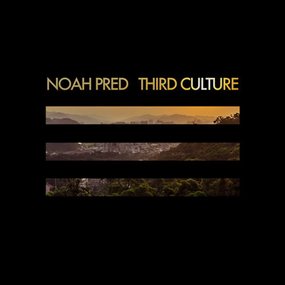

Noah Pred's third culture: “It's about of finding one's place in the cosmos”

Raised in Canada and the US, and now Berlin based, Noah Pred has been running his Thoughtless Music label since 2007, a stable known for its high-quality approach to independent club music.
With a signature deep, melodic sound that oft ventures to the dubbier side of house and techno, the label’s commitment to quality stretches from its roster of artists, right across to the gorgeous artwork that adorns much of the label’s artwork and marketing.
Over the past 12 months, Thoughtless Music has hosted the acclaimed Neukölln Burning album from Australian techno luminary Deepchild, as well as a steady stream of singles and EPs from Android Cartel, Arthur Oskan and many more.
In late 2013 though, the focus moves back to Pred himself, with the release of his first studio album in over four years Third Culture.
Reflective of Pred’s desire to create music that resonates beyond the club, Third Culture is a broad affair that traverses a lot of different energies and tempos.
There’s a nice spread of vocals, half-and-half with the instrumentals, and there’s also definitely some groove elements that go beyond your standard house and techno. Beginning with the broken beats on the opening Unlock, over to the slick future hip-hop vibes on his Deepchild collaboration Questions.
So what was Pred’s aim with putting the album together? “I really want to release music with a unique and compelling artistic vision that has the potential to stay with people long after the club is closed, presenting it in a consistent, timeless fashion with maximum integrity.”
As Noah Pred prepares to launch Third Culture on Thursday 7th November at Berlin’s Loftus Hall, as part of the BerMuDa Festival this week, I Voice finds out more about the album.
***
I know you just got back from some extensive touring. How were the gigs in the different countries, and how would you describe your approach to performing at the moment?It's interesting, deep house and techno really seem to have taken a leap forward in North America. Maybe it's a residual effect of the ‘EDM boom’, I'm not sure, but the crowds have really grown in recent years, which was great to see.
{kind=link}

It approached the surreal at times though: places that used to be bastions of dubstep and strongholds for breaks are all playing deep house and techno now. My sound was completely underground for so long, and that's finally starting to change a bit. While it feels sort of vindicating, it feels kind of weird too.
As far as my approach to DJing, really it's all about being in the moment: being sensitive to what's actually going on around me, and making selections designed to deliver the experience everyone present seems to need most.
That doesn't mean giving people what they think they need, which would be a pure crowd-pleasing mentality – but giving people what they don't even necessarily know they need; that is, until they hear it. This is what I'm aiming for, at least – but it's really all about meeting the moment head-on and going from there.
Your new album Third Culture is finally out this week. Did you have a vision for it when you got started, or was it a matter of the different pieces drawing together?It was definitely more of a drawing together I would say. Originally I was looking at almost thirty candidate tracks that eventually sifted into the shape the album took. That said, they were mostly written during the same sessions, dealing with the same emotions and challenges I was going through at the time – so I do see them all as more or less born out of a unified process.
The title Third Culture refers to a term coined to refer to children who accompany their parents into another society. What are the narrative themes of the album?Well, yeah, that was my experience growing up in the East Bay, and then moving to a fairly remote island in Western Canada when I was 11 years old; looking back it's clear that move was probably the main factor in my enduring obsession with music. Another result of that move was that I've always felt this sense of being a bit of an outsider, of not quite belonging completely.
That same feeling allowed me to move around a lot over the years, and as warmly as I've been welcomed in the places I've lived, somehow a nagging sense of not quite belonging has always followed me. Living here in Berlin now, I'm surrounded by other ex-pats who, like me, are living outside the native culture here while trying to adopt certain elements of it at the same time, and there's sort of an Ausländer solidarity that comes from this collective sense of not quite belonging. So the term has become especially relevant living here.
The title is also a reference to a third way – referenced in E. O. Wilson's Consilience and John Brockman's book, The Third Culture – that might carry humanity into the future more sustainably by merging science with the arts. This sort of balance is something I strive to embody in my music: employing a technical approach in service to experimental, creative impulses; coaxing novelty from the chaotic void and channeling it through the temporal organization of intricate, intentional patterns.
So as an album, I wanted to do something that would come across as more of a journey for the listener and stand up to repeated listens – something that people could sink their teeth into...But as to the narrative of the album, it's really about the process of finding one's place in the cosmos: becoming truly human by accepting one's mortality and the unyielding impermanence of everything – yet at the same time, acknowledging the potency of one's actions in a causally interpenetrating reality. Consumer culture tends to encourage a rather narrow range of focus in our day-to-day lives, but the fact is we all inhabit a continuously fluctuating vastness that can be difficult to comprehend – and yet, in which I've somehow managed to find a tremendous amount of comfort.
{kind=link}
The vibe of Third Culture is very much smooth grooves, coupled with a deeper melodic approach and some very dubby techno vibes. There’s a lot of material on Thoughtless that could be described similarly; is this the sort of energy you gravitate towards?I definitely tend to be compelled towards musically composed sounds, and try to release music that has a resonance or impact with the potential to last beyond and function outside the typical club experience; I guess those are my tendencies in the studio too. It's not really so much a conscious stylistic decision with the label, but more a matter of what really speaks to me and seems to hold merit as a unique artistic vision. We're certainly not in the market of churning out standard-formula club bangers, that's for sure. I mean, we love it when our records do work in the club, but that's not the end goal for our releases, not at all.
There are definitely some groove elements on Third Culture that go beyond your standard house and techno, starting with the broken beats on Unlock, over to the slick future hip-hop vibes on Questions. What were the inspirations you were working with?I don't know that I was consciously working with any particular inspirations outside of the long line of musical talent that's influenced all my work to this day. I'm sure certain influences showed up purely by accident.
If anything, I may have made a conscious effort for it not to sound overly influenced, stylistically, by Berlin – I didn't want to move here, set up camp, and then make a “Berlin album.” I mean, the city has obviously influenced me in a lot of other ways, and it's absolutely pushed me to step up my game – but I didn't want to be that guy.
There’s a nice spread of vocals across the album too. What was the additional challenge here in terms of songwriting, and were you consciously working towards something that would help give a bit more shape to the journey of the album?I first worked with vocalists extensively about eight years ago, when I did a collaboration with Kinnie Starr for a side project of mine. That was a great experience, and I always wanted to do more. With the messages I wanted to convey on the album, it seemed like a great opportunity to get in touch with some vocalists whose work I enjoyed and see what kind of magic we could make together.
In the end, it was a challenge I embraced, and I'm pretty happy with the results. I think it definitely helps give the journey of the album, as you said, a bit more shape.
You’ve shown a desire to move beyond the structure of a club record, though there’s club-friendly records too. Where you looking to strike some kind of a balance?Not consciously, no. I mean, I definitely didn't want it to be a club record, that didn't make sense to me; might as well just keep making singles in that case.
So as an album, I wanted to do something that would come across as more of a journey for the listener and stand up to repeated listens – something that people could sink their teeth into. But at this point, I've been making dance music so long, it's really difficult for me to make music that doesn't have some kind of groove at its core; it's pretty much an irresistible instinct for me.
In a recent interview Tiga talked about his Turbo Recordings label, saying he finds it immensely rewarding, but the running joke is how running a record label can be a ‘perverse’ business to be a part of sometimes, in terms of how much input is required for potentially little return. What are your insights on running an independent label in 2013?It's definitely a labour of love; the direct financial “rewards” are laughable at best – it might even be considered slightly masochistic in terms of the hours I pour into it. But the beauty of life is that it's not all about money – and there's so much value in a project like this, day to day, that makes it all worthwhile. I think if people want to be happy, they need to find value and fulfilment in things that have nothing to do with their bank account or material possessions. If the pressure is there inside you to make art and share it, why let fears of commerce stop you? In other words, if it's not it's own reward, you're probably doing it for the wrong reasons to begin with. So the main investments are always time and energy – which are never worth it if your heart's not there. But as long as your heart's in it, and the art is made in service to something beyond your own ego, I think it's probably going to turn out to be worthwhile.
So what’s planned around the album over the next 6-12 months?I've got a new live show and some European tour dates lined up. There will hopefully be some North American dates in the late spring and early summer. And then there's going to be a collection of remixes from the album in the works as well, which is going to be really exciting – plus a few remixes from me, and some busy times ahead for Thoughtless.
Third Culture album launch on Thursday 7th November at Berlin’s Loftus Hall